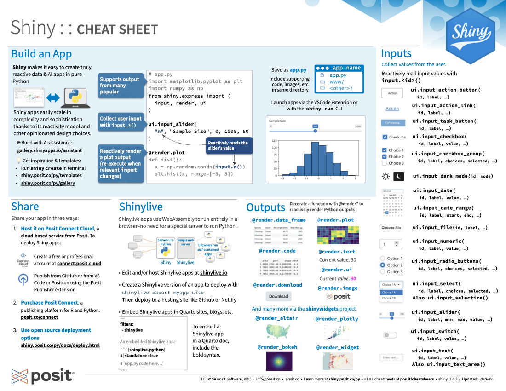
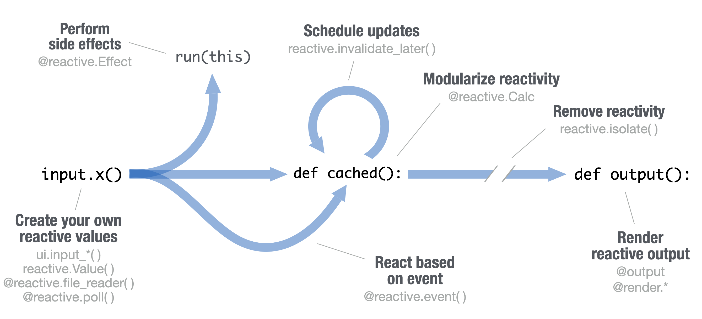

Download PDF

Translations (PDF)
Shiny makes it easy to create truly reactive data & AI apps in pure Python. Shiny apps easily scale in complexity and sophistication thanks to its reactivity model and other opinionated design choices.
Collect user input with ui.input_*() functions and reactively read those values with input.<id>(). Decorate a function with @render.* to reactively render Python outputs (re-executing when relevant input changes).
Save your app as app.py in a directory along with any supporting code, images, etc.
Run shiny create in the terminal to generate an app.py file based on a template. Launch apps via the VS Code extension or with the shiny run CLI.
Get inspiration and templates by running shiny create in the terminal, or from shiny.posit.co/py/templates and shiny.posit.co/py/gallery.
Build with AI assistance at gallery.shinyapps.io/assistant.
Share your app in three ways:
Host it on Posit Connect Cloud, a cloud based service from Posit. To deploy Shiny apps:
Purchase Posit Connect, a publishing platform for R and Python. posit.co/connect
Use open source deployment options. shiny.posit.co/py/docs/deploy.html
Shinylive apps use WebAssembly to run entirely in a browser–no need for a special server to run Python.
shinylive export myapp site. Then deploy to a hosting site like Github or Netlify.To embed a Shinylive app in a Quarto doc, include the below syntax.
Decorate a function with @render.* to reactively render Python outputs. Shiny supports output from many popular Python packages.
@render.data_frame
@render.plot
@render.code
@render.text
@render.image
@render.ui
@render.download
And many more via the shinywidgets project:
@render_altair
@render_plotly
@render_bokeh
@render_widget
Collect values from the user. Use a ui.input_*() function to make an input widget that saves a value as input.<id>. Reactively read input values with input.<id>().
ui.input_action_button(id, label, ...)
ui.input_action_link(id, label, ...)
ui.input_task_button(id, label, ...)
ui.input_checkbox(id, label, value, ...)
ui.input_checkbox_group(id, label, choices, selected, ...)
ui.input_dark_mode(id, mode)
ui.input_date(id, label, value, ...)
ui.input_date_range(id, label, start, end, ...)
ui.input_file(id, label, ...)
ui.input_numeric(id, label, value, ...)
ui.input_radio_buttons(id, label, choices, selected, ...)
ui.input_select(id, label, choices, selected, ...). Also ui.input_selectize()
ui.input_slider(id, label, min, max, value, ...)
ui.input_switch(id, label, value, ...)
ui.input_text(id, label, value, ...). Also ui.input_text_area()
Reactive values work together with reactive functions. A reactive value must be read from within a reactive function to avoid the error No current reactive context.
Module located at shiny.reactive.
Create a reactive value from other (reactive) values. Helps avoid redundant logic and unnecessary computation.
Create a reactive UI or output.
Perform side effects like logging, updating.
Reactive functions re-execute when any of their reactive dependencies (i.e., values) change. However, sometimes you want to ignore all but one (i.e., event). Don’t execute until input.submit is truthy (i.e. the button is clicked):
A reactive.value() can be useful for programmatically setting/reading a reactive value. This is often useful when the value can’t be derived from input values alone.

ui.input_*()reactive.value()@reactive.file_reader()@reactive.poll()@reactive.effectreactive.invalidate_later()@reactive.calcreactive.isolate()@reactive.event()@render.*Design delightful UI with a collection of layouts, components, themes, & more.
with ui.sidebar(): Sidebar
with ui.nav_panel(): Multi-page
Visually group UI elements together with the card() component.
with ui.layout_columns() - 12-col grid
with ui.layout_column_wrap() - Equal-width cols
with ui.layout_sidebar() - Resizable 2-cols
Navigate a set of nav_panel()s in various ways with navset_card_*.
Tip: place within ui.sidebar() to group similar inputs.
Make the app behave and look exactly how you want it with web tooling and theming.
Shiny UI is powered by HTML (plus JS/CSS):
Create bespoke experiences with custom HTML (ui.tags) and CSS/JS snippets: ui.include_css() / ui.include_js().
Can also interface with popular frameworks like React, Vue, Svelte, etc.
Statically serve any file (image, CSS, JS, etc) by placing them in the www/ dir (next to app.py).
Choose from a set of pre-packaged themes via shinyswatch, or change main colors/fonts via brand-yml.
Build streaming Gen AI interfaces like chatbots and more with the Chat and MarkdownStream components.
Use Chat to implement a streaming chat interface. Provide a callback to generate a response to user_input using an AI framework of your choice (e.g., chatlas, LangChain, etc).
An app.py that imports from shiny.express uses ‘Express mode’ to make development faster.
Express extends “Core” Shiny to make UI and server logic one in the same.
Core may be more suitable for sophisticated apps where a decoupling of UI and server is beneficial.
CC BY SA Posit Software, PBC • info@posit.co • posit.co
Learn more at shiny.posit.co/py
Updated: 2026-08.